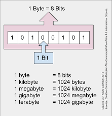

No contexto da computação, o kernel refere-se à parte central de um sistema operacional. Ele gerencia os recursos do sistema, como a CPU, a memória e os dispositivos de entrada e saída, e fornece uma interface entre o hardware e os programas em execução. O kernel é responsável por tarefas essenciais, como agendamento de processos, gerenciamento de memória e controle de dispositivos.
É uma unidade de medida de armazenamento de dados que equivale a aproximadamente 1.024 bytes. Embora originalmente "kilo" signifique mil, na computação, um kilobyte é definido como 2^10 bytes (ou 1.024 bytes) devido à natureza binária dos sistemas de computadores